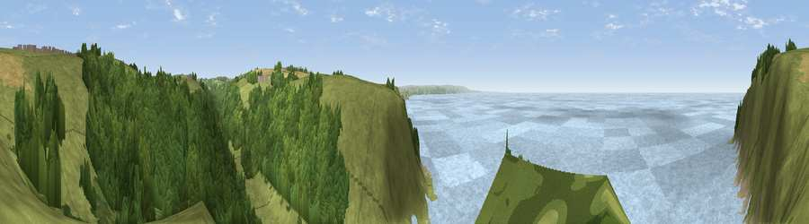

Viewpoint near Morwenstow
#2857 in England · top 11% of its area beats it · near MorwenstowWhere it is
The exact computed spot (SS 20125 11825). Click the marker for map links.
The view, rendered

A 360° render of this exact spot computed from the terrain model, tree cover and land cover — summer colours, afternoon light, calibrated against photographs of famous viewpoints. Real trees, hedges and buildings will differ in detail.
The panorama
Grey silhouette: terrain skyline in each direction (720 bearings, Earth curvature and refraction included). Dashed green: skyline with trees (+15 m) and buildings (+8 m) as obstacles. Blue strip: how far the ground is visible on each bearing.
Where the view opens
Wedge length = distance to the farthest visible ground on that bearing (vegetation-aware). Rings at 10, 25 and 50 km.
What fills the view
41% water · 36% grassland · 21% woodland ·
Angular shares of the visible panorama (visual magnitude), not map area. Landscape diversity 0.50 (0–1 Shannon).
Key numbers
More beautiful places nearby
The staircase of upgrades: each row has a higher view potential than everything closer. Driving times are estimates from straight-line distance, calibrated against real road routing — check an actual route before setting out.
| Place | Direction | Drive | Score |
|---|---|---|---|
| Viewpoint near Morwenstow | N · 2 km | ~5 min | 75.4 |
| Viewpoint near Morwenstow | N · 2 km | ~6 min | 77.9 |
| Embury Beacon | N · 8 km | ~16 min | 83.8 |
| Viewpoint near Crackington Haven | SSW · 19 km | ~32 min | 88.1 |
| Viewpoint near Combe Martin | NE · 53 km | ~75 min | 88.9 |
| Holdstone Hill | NE · 55 km | ~77 min | 90.2 |
| The Knoll | E · 135 km | ~159 min | 91.0 |
50.87785, -4.55819 · source: screening · position refined by local search. Computed location — check access rights before visiting.